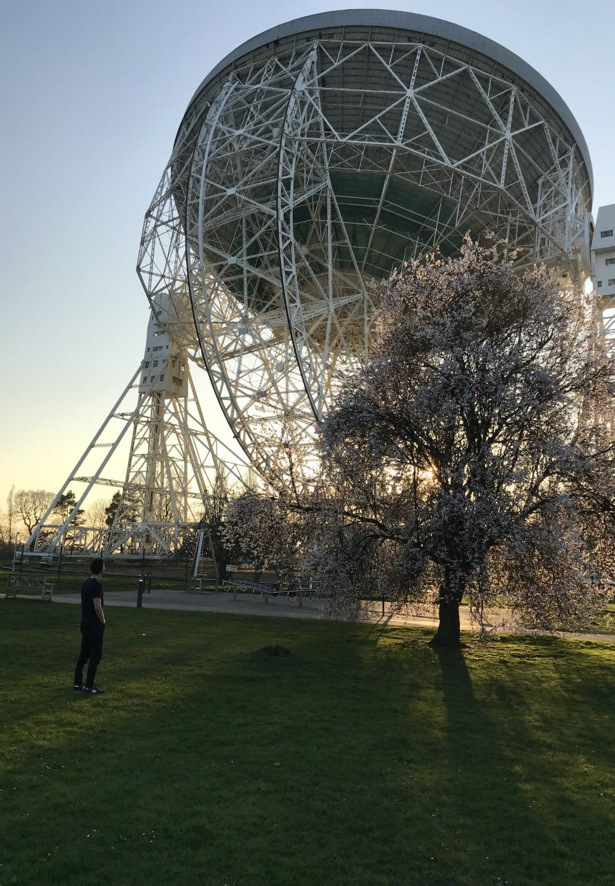

I am currently a postdoctoral research associate at the University of Cambridge (UK). I previously completed my PhD thesis at the University of Leeds, between 2019 and 2023. The thesis was titled '3D simulations of oxygenated rocky planetary climates and observational predictions'. I achieved my MPhys in Physics from The University of Manchester (UK), where I studied between 2015 and 2019.
I am interested in a variety of topics related to planetary and exoplanetary science. At Leeds, my research focused on atmospheric simulations, where I investigated the connection between stars, chemistry, dynamics and climate. To do this, I used various models from the CESM2 framework, in particular WACCM6, but also WACCM-X. From these simulations, I used various tools to compute synthetic exoplanet spectra and this predict future observations.
At Cambridge, I am performing simulations of exoplanets in the sub-Neptune regime, focussing on Hycean worlds. These are theoretical planets that are bigger than Earth and smaller than Neptune, and would have an ocean layer underneath a hydrogen-rich atmosphere.
Outside of astrophysics, I have an academic interest in pretty much every subject - every time I had to make a decision to pick subjects to study and say goodbye to other ones in school, college or university, I always found it frustrating that I couldn't learn everything. With the interdisciplinary nature of my work, I hope to claw my way back into the multitude of intriguing subjects out there.
I am interested in improving the opportunites for minorities within science and research, as well as increasing their visibility. For example, far too many talented women who made crucial contributions to science (including astronomy and astropysics) are overlooked when discussing the history of a particular scientific discipline.